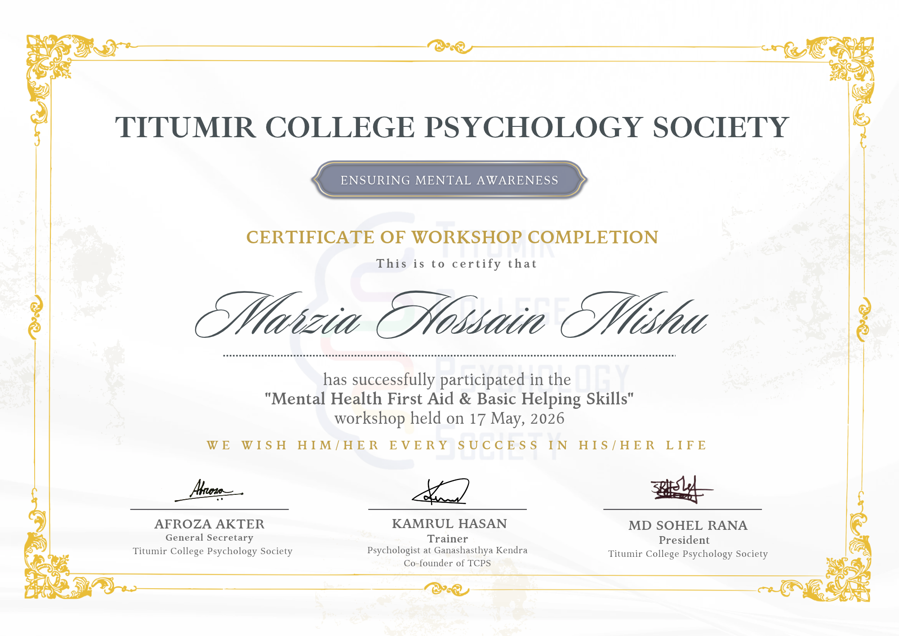
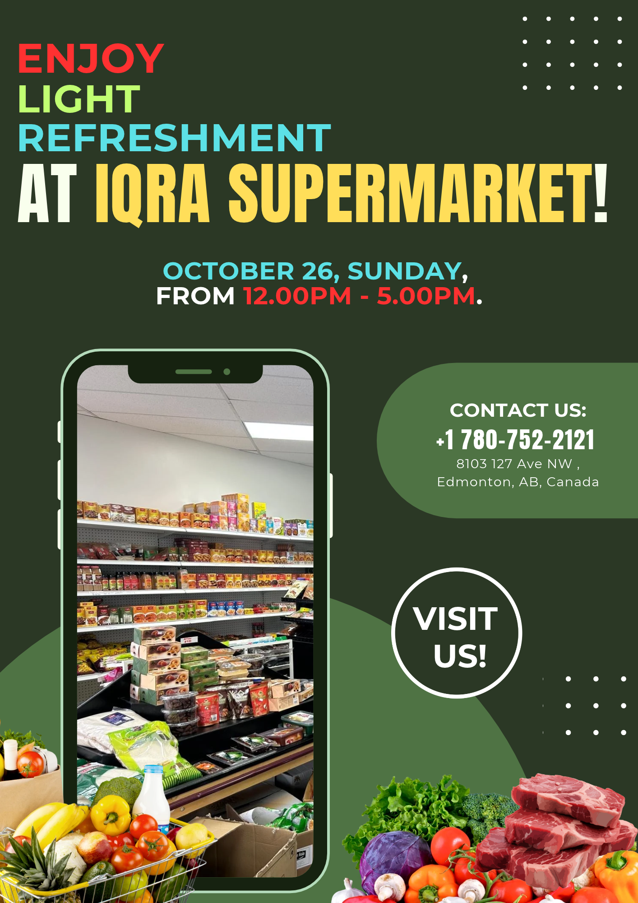
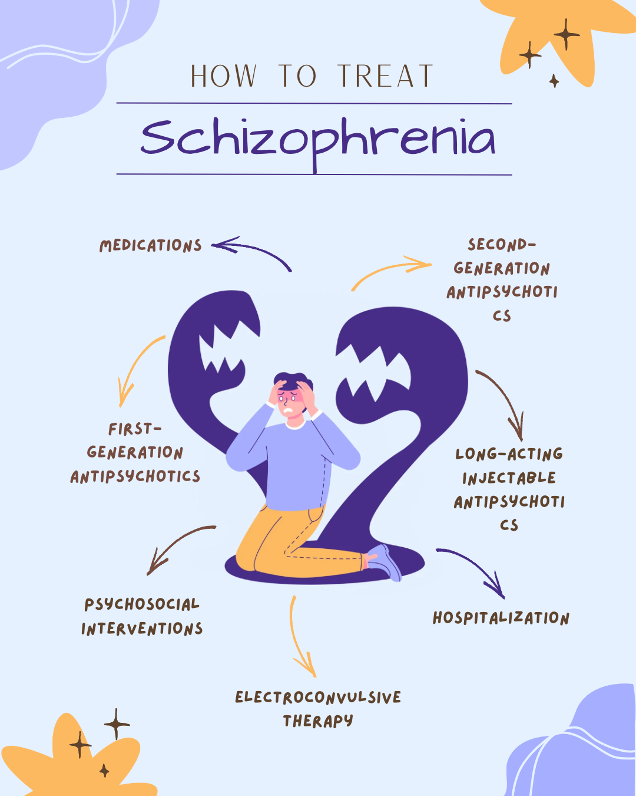
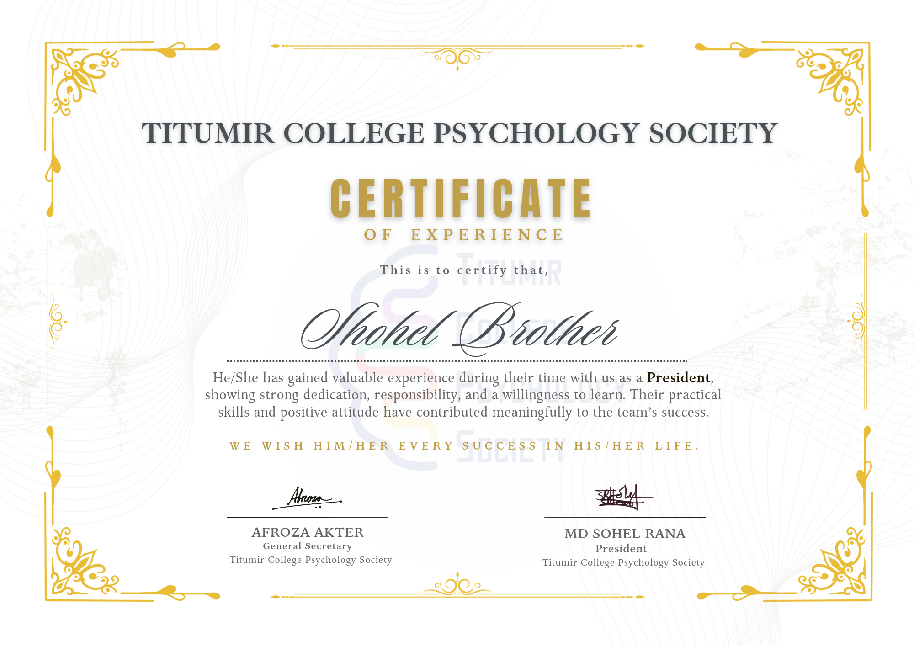
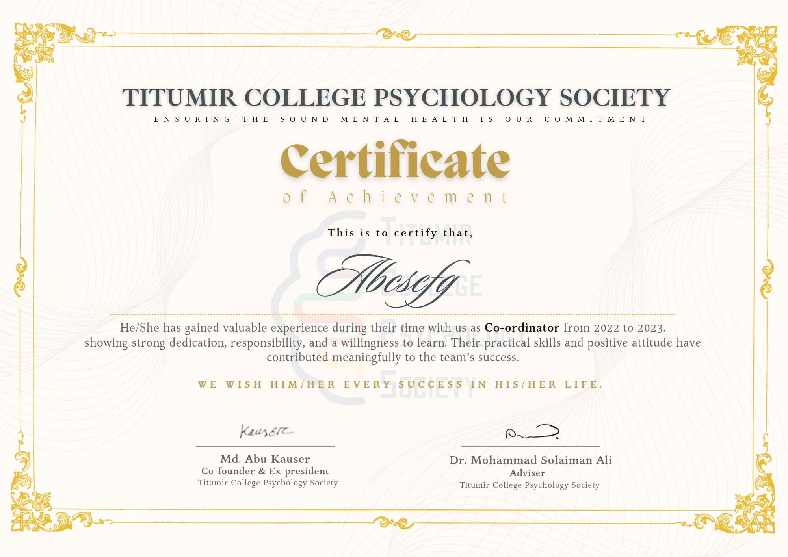

01 / FREELANCE
Freelance Graphic Designer
BD MART · Alberta, Canada
Social media content, catalogs, promotional campaigns and brand visuals.CREATIVE & DIGITAL PORTFOLIO / DHAKA, BANGLADESH
Business minded, design led, and tech curious. I bring business, technology, and creativity together to turn ideas into meaningful impact.

I connect creative thinking with practical execution, bringing ideas to life through design, communication and technology.
My journey has grown through freelance design projects, teaching, college clubs and collaborative initiatives. I enjoy learning by doing, taking responsibility and finding thoughtful ways to solve problems.
I'm especially interested in the space where business strategy, digital tools and analytical thinking meet, and in how thoughtful ideas can become meaningful experiences.
Explore individual tools and capabilities across creative production, digital communication, technology and leadership.
Skill descriptions distinguish practical work, formal coursework and developing technical foundations. They are not a claim of professional certification.
NAGOYA · JAPAN · APRIL 2027 to PRESENT
Currently pursuing a Global Bachelor of Business Administration at Nagoya University of Commerce and Business in Japan. My studies focus on international business, management, entrepreneurship and marketing, while exploring how data, technology and innovation shape business decisions in a global environment.
DISCOVER NUCB ↗Roles and responsibilities that have shaped the way I work, communicate and contribute.
BD MART · Alberta, Canada
Social media content, catalogs, promotional campaigns and brand visuals.Iqra Meat and Supermarket · Alberta, Canada
Flyers, promotional graphics and digital advertising creatives.Carbon Academy · Dhaka, Bangladesh
Taught ICT to Class 11 students and supported their learning.Red Crescent Youth · Government Titumir College Unit
Supported youth activities, team initiatives and visual communication.Experiences built around teamwork, creative contribution and taking responsibility.
Sabujbagh Government College
Sabujbagh Government College
Government Titumir College
Government Titumir College Unit
Selected learning milestones and recognition. Open a certificate or browse the full archive.
Posters, campaign graphics, certificates, presentation work and video. Move your pointer through the gallery and watch each piece lean gently toward it.

CERTIFICATE COVER
COVER POSTER
POSTER
FLYER POSTER
POSTER
POSTER
CERTIFICATE
CERTIFICATE12 SELECTED WORKS · IMAGES, DOCUMENTS AND MOTION
Ideal School & College, Motijheel
Sabujbagh Government College
Government Titumir College
Pure Information Technology Engineering Training Institute Bangladesh (P.I.T.E.T.I.B)
Nagoya University of Commerce and Business · Nagoya, Japan
Academic grades and language test scores are intentionally not published on this portfolio.
A personal venture shaped by creativity, brand identity and a passion for building something of my own.
EXPLORE PRODUCTS & SHOP ↗ OPEN FACEBOOK PAGE ↗Facebook is the official destination for current product details, availability and ordering.